Monitoring Data Input Tab
Once the Monitoring Plan is set-up, the fumigator is ready to enter monitoring data into the Monitoring Input tab.
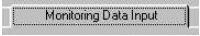
Below is an example of the Monitoring Data Input Tab before details are entered. Notice the top portion (circled with the dotted line) of the tab where date and time for Start Introduction, Start Exposure and End Exposure have pull-down menus to adjust those key inputs. The fumigator designates these events on this tab and the Monitoring Status tab. These terms are defined below:
Start Introduction is the time fumigant introduction into a structure or chamber begins/began.
Start Exposure is the time at which the accumulation of CT (dosage) begins. Generally this should be at equilibrium.
End Exposure is the time at which the accumulation of CT (dosage) ends.
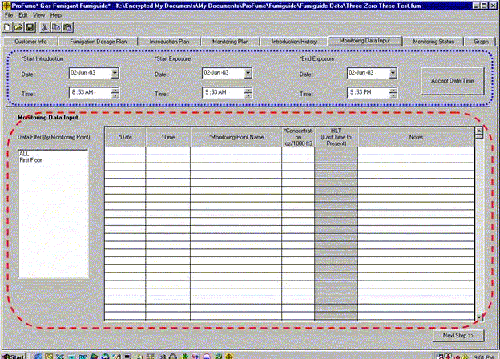
Now notice the Monitoring Data Input portion of this tab circled with the dashed line. This is where monitoring data will be entered, sorted by monitoring point and HLT displayed by monitoring point.
An example of the Monitoring Data Input screen below shows four rounds of monitoring data for all 6 monitoring points. Since the Monitoring Data Input screen is filled with data, the fumigator can use the up & down scroll bar to move through the entire data set. Notice that data for ALL monitoring points are shown in this example.
NOTE: It is highly recommended to save frequently while entering data.
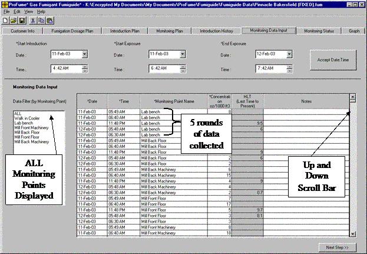
If the fumigator only wants to see data for one monitoring point, then that monitoring point should be selected from the Data Filter list.
If the fumigator only wants to see data for some of the monitoring points, then those monitoring points can be selected from the Data Filter list by holding down the "Ctrl" button on the computer keyboard and clicking on the desired monitoring points from that list. "Ctrl" buttons are located to the left and right of the space bar on standard computer keyboards.
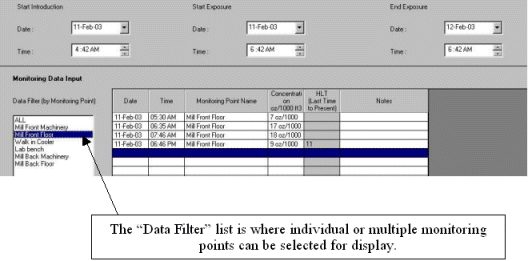
Notice in the example below that monitoring points are displayed in alphabetical order and then chronological order within the groupings by points.
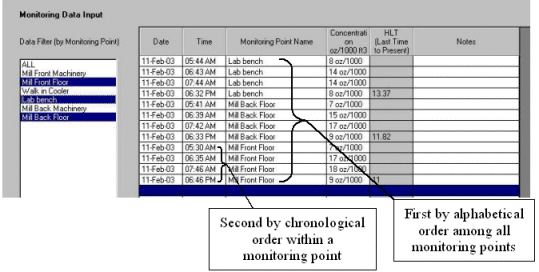
Individual or several monitoring lines in this tab can be copied and pasted elsewhere on the table by selecting the desired line (the line will be highlighted in blue). Then right click and select Copy. After arrowing down to an open line in the tab, or selecting a monitoring point through the Data Filter, then right click and select Paste.
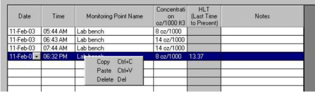
Individual monitoring lines can be deleted by a similar process, but you should select Delete from the right clicked menu. Notice that shortcut keystrokes are available here, Copy (Ctrl + C), Paste (Ctrl + V) and Delete (Delete). (Delete button which is above the Backspace button on standard computer keyboards).
Another handy feature on the Monitoring Data Input tab is the ability to either enter dates manually or by selecting the date from a caledar that will pop up when the calendar arrow in the Date column is selected.
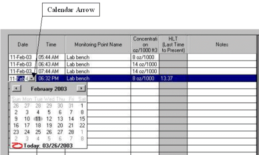
Within the Time Column, the correct time when the monitoring sample was taken can be changed by double clicking a cell in that column. Then the fumigator can toggle among the Hour, Minute and AM/PM segments within that column as shown in the examples below. Monitoring points are displayed in chronological order.
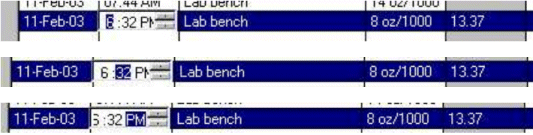
All monitoring points that were set-up in the Monitoring Plan tab are available in a pull-down menu on the Monitoring Data Input tab. Also notice in the example below that the HLT was not calculated until the concentration readings peaked then began to decline.
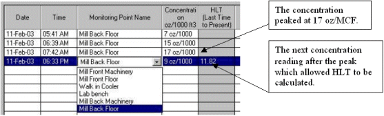
Short notes can be entered in the Notes column for any monitoring point records.
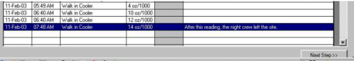
As more monitoring data are entered, additional HLT calculations are performed and displayed.
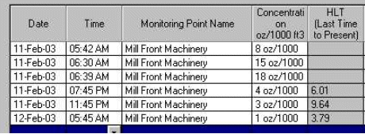
HLT is calculated for a monitoring point when the fumigator selects another monitoring point from the Filter Data list or goes to any other tab within the program.
Warning Message Linked to the Monitoring Data Input Tab
The following message will appear if the fumigator clicks Next Step from the Monitoring Data Input Tab without inputting required time events (Start Introduction, Start Exposure and End Exposure).
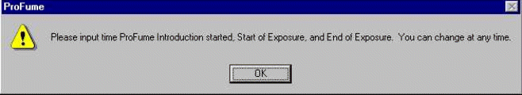
The warning message below will appear concerning the deletion of a row on this tab.
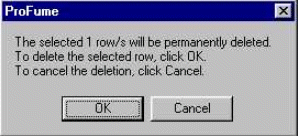
While data is being entered in the Monitoring Data Input tab, the fumigator can go between this tab and the Monitoring Status tab to check the status of the fumigation by area.